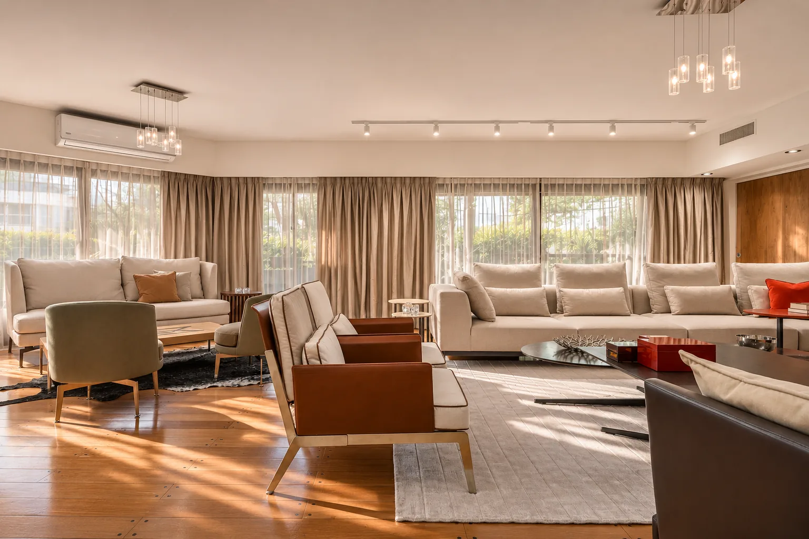
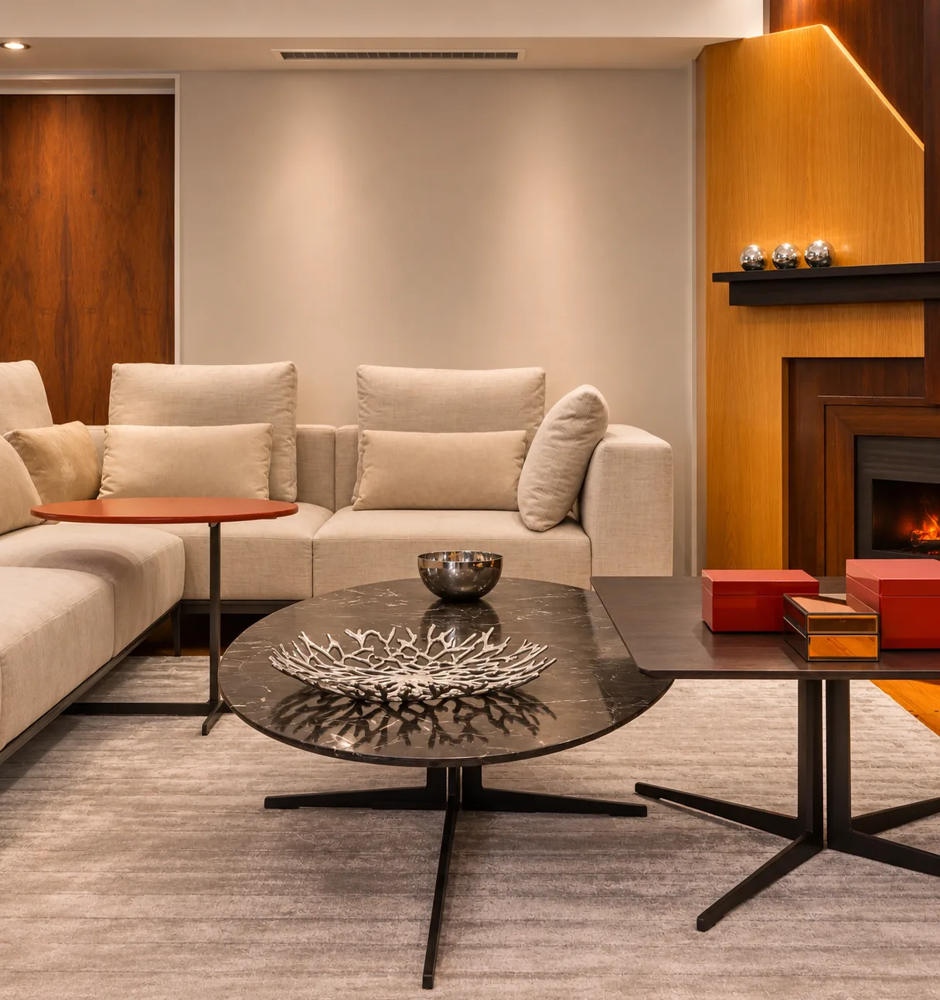
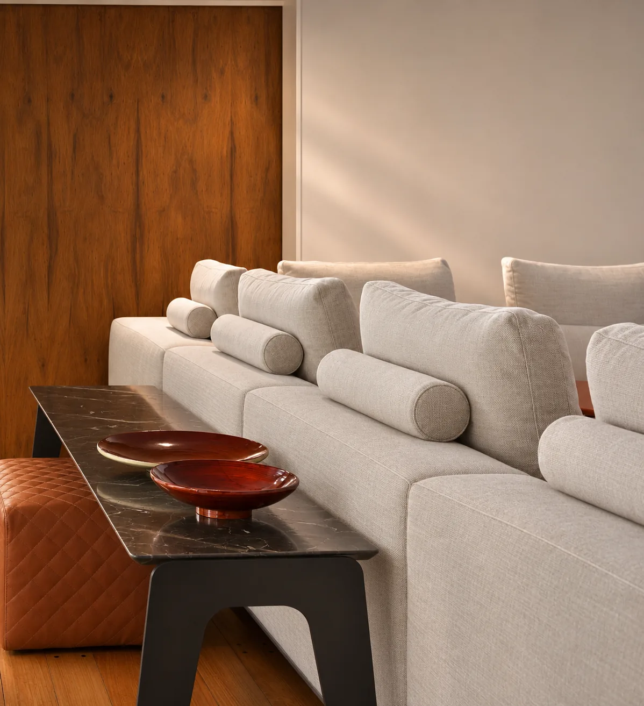
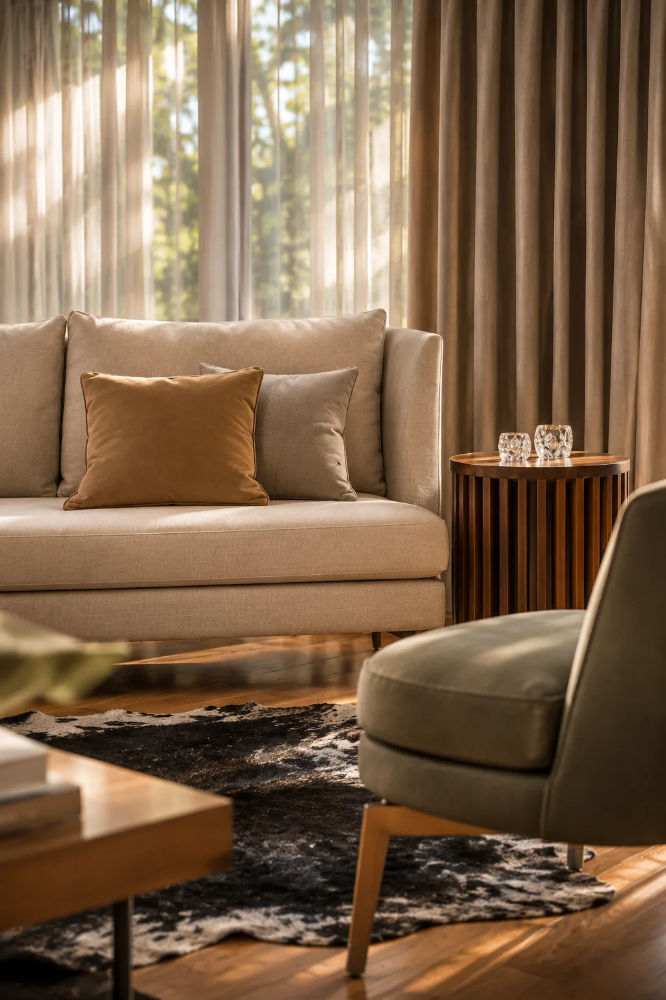
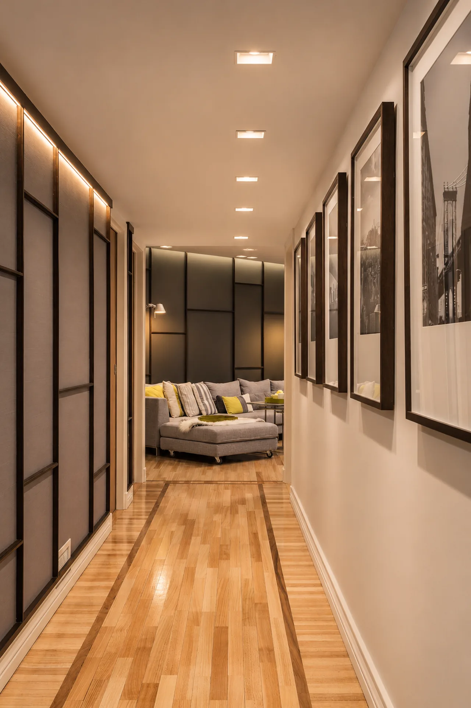
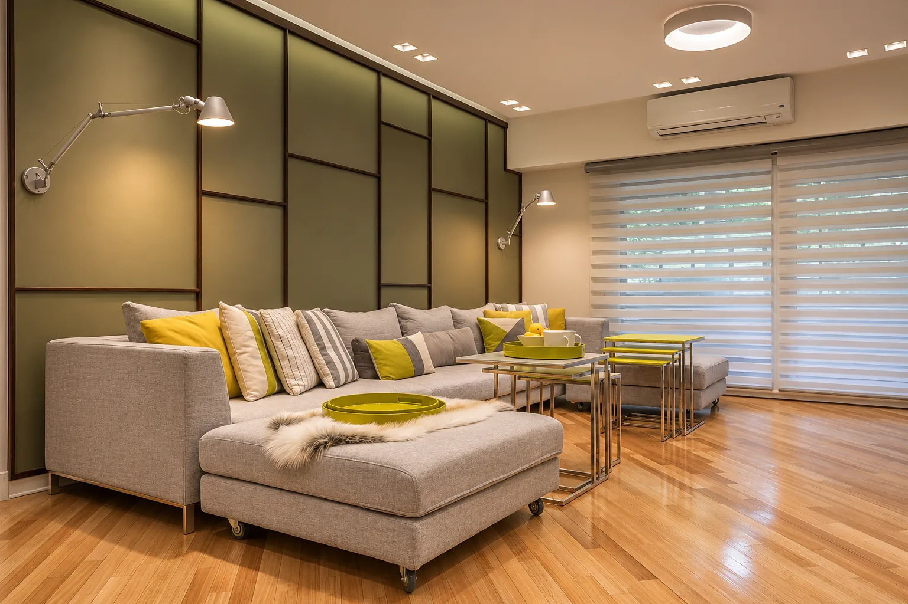
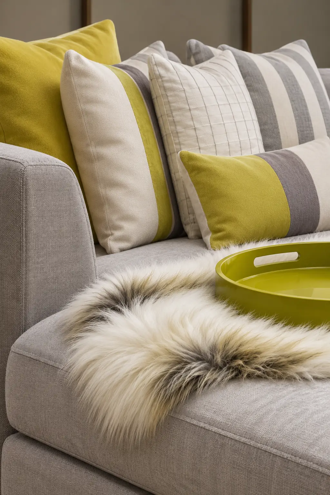
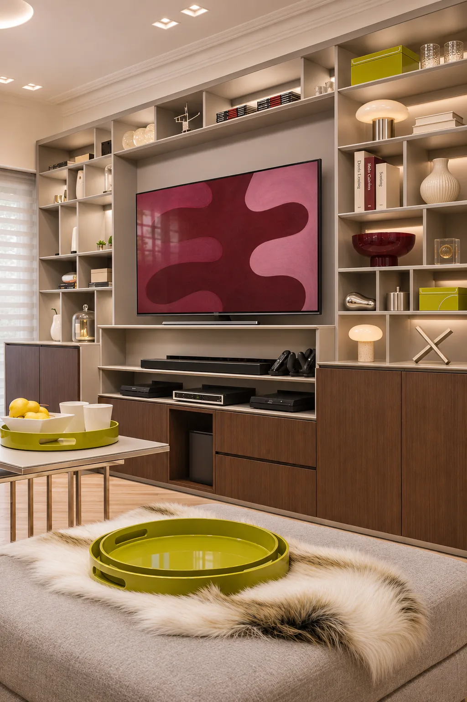
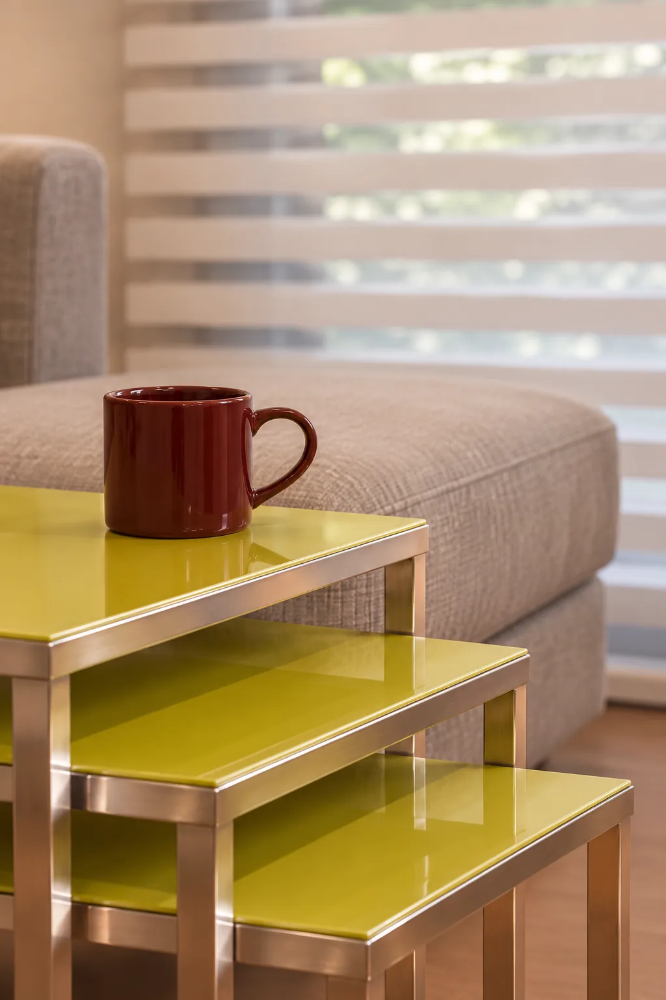
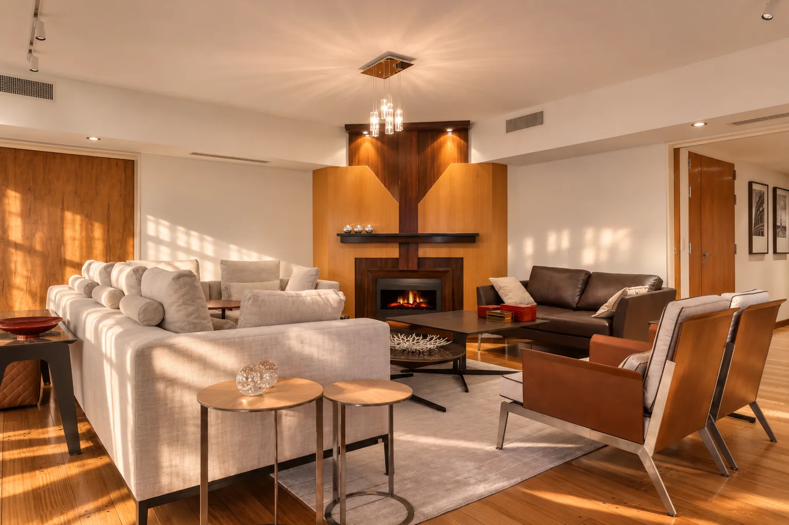

Diseño italiano para un living con muchos invitados
El estudio volvió a trabajar en la Casa Villanueva. En esta segunda etapa de intervención, la familia pidió un nuevo proyecto para el family room, contiguo a la terraza donde hacen asados y donde pasan mucho tiempo el fin de semana, y para el estar principal.

Un estar para recibir
El estar principal está pensado para encuentros de hasta 20 personas, con dos áreas de sillones de diseño italiano, varias mesas de apoyo que combinan mármoles y maderas y una cuidada iluminación.



Texturas cálidas
Una consola de mármol oscuro detrás del sillón, mesas auxiliares de madera y almohadones en tonos tierra completan los sillones claros.
Un estar para recibir y un family room para el fin de semana
Hacia el family room
El paso que une el living con el family room anticipa el lenguaje del otro espacio: un varillado similar al de la pared del sillón, donde en este caso cada paño se enteló. En la otra pared, fotos en blanco y negro enmarcadas en madera oscura acompañan el recorrido.



El gran sillón
El protagonista es el gran sillón con pouf apoyapiés, donde se sientan cómodamente seis personas a disfrutar de una película o un evento deportivo. Lo acompañan dos sets de mesitas auxiliares con base cromada y tapa laqueada de color.
Por detrás del sillón, la pared se revistió con un varillado de madera oscura y paños de vidrio opacado que reflejan sutilmente el ambiente.


Frente al sillón
La biblioteca que enfrenta el sillón contiene, además de la TV, una cava detrás de puertas y varios recuerdos personales.
Luz y materia
Este proyecto es un rediseño de espacios de estar: el estudio define el equipamiento, los revestimientos, la iluminación y los objetos para cada forma de reunirse.
Conocer los servicios
Otros proyectos
Ver todos los proyectos



Cada proyecto empieza con una conversación
El estudio desarrolla proyectos integrales de vivienda en Argentina, España y Estados Unidos.